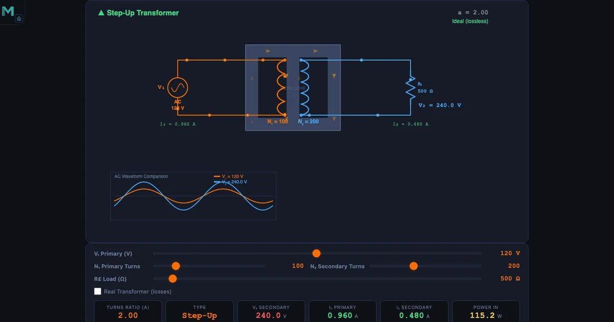
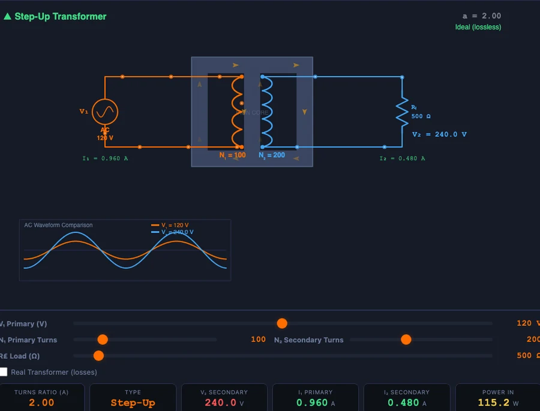

Transformer Simulator — Turns Ratio, Efficiency, and Power Transmission Explained

- A transformer changes AC voltage by the turns ratio a = N₂/N₁: the voltage ratio is V₂/V₁ = a and the current ratio is I₁/I₂ = a, so input and output power stay equal in an ideal transformer.
- Real transformers lose power to copper loss (I²R in the windings, which scales with the square of load current) and roughly constant iron loss (hysteresis and eddy currents in the core); efficiency η = P_out / (P_out + P_copper + P_iron) × 100%, typically 95% or higher.
- Grids step voltage up for transmission because line loss is I²R = (P/V)²R — raising voltage ten-fold cuts current ten-fold and line losses by a factor of 100.
Every electrical engineering student encounters the transformer early, and most find it straightforward on paper. A coil on each side of a magnetic core. Some turns. A voltage ratio. Tick the box and move on. The trouble comes when you actually need to design one — choose the turns count for a target output voltage, account for winding resistance losses, calculate efficiency under load, or explain why every kilowatt of electricity reaching your city travels at hundreds of kilovolts and not at the 230 V your socket delivers.
Those questions need numbers, and numbers need a tool. The free transformer simulator on NHIT VisualLab lets you set primary and secondary turns, load resistance, winding resistances, and core-loss parameters, then watch the secondary voltage, current, losses, and efficiency update in real time. No textbook iteration. No waiting. You change one value and everything downstream adjusts instantly.
This guide walks through the physics behind each result the simulator produces — with exact numbers you can verify yourself in the tool right now.
Why Transformers Are the Backbone of Modern Electrical Systems
A transformer does one thing: it transfers electrical energy between two circuits through a shared magnetic field, changing the voltage level in the process. That single capability underpins every stage of the AC power grid. Generation happens at around 10–25 kV. Step-up transformers at the power station push that to 400 kV or higher for long-distance transmission. Distribution transformers near neighbourhoods step it back down to 11 kV. Pole-mounted or pad-mounted transformers bring it to 230 V at your wall. Four transformer stages. No mechanical moving parts. Losses under 1% at each stage in a modern unit.
Outside power distribution, transformers appear in audio amplifiers for impedance matching, in switched-mode power supplies inside every laptop charger, in isolation circuits for patient safety in hospitals, and in voltage conversion for industrial equipment. The physics is the same in all cases: Faraday’s law, applied to two coils sharing a magnetic flux.
Here’s the thing — once you understand turns ratio and what happens to current when voltage changes, all these applications click into place. The simulator is the fastest way to build that understanding, because you can try any configuration without soldering anything.
The Turns Ratio — One Formula, Infinite Applications
The turns ratio \(a\) is the ratio of secondary to primary turns:
\[a = \dfrac{N_2}{N_1}\]
This single ratio governs both the voltage and current transformation. For an ideal (lossless) transformer, voltage scales by the same ratio and current scales by the inverse:
\[\dfrac{V_2}{V_1} = a \qquad \dfrac{I_1}{I_2} = a \qquad \Rightarrow \qquad P_1 = P_2\]
The power conservation identity is the key point. Voltage goes up by \(a\), current goes down by \(a\), and the product stays the same. That is not a coincidence — it is a direct consequence of energy conservation. You cannot get more power out than you put in.
The simulator’s hero configuration makes this concrete. Set N₁ = 100 and N₂ = 400: turns ratio a = 4. Apply 120 V to the primary and the simulator immediately shows V₂ = 480 V. If the primary draws 4 A, the secondary delivers 1 A. Power on both sides: 120 × 4 = 480 W and 480 × 1 = 480 W. Identical. The formula and the readout agree to the digit.
The Faraday’s law derivation of the voltage relationship is worth seeing once. The EMF induced in a coil is:
\[\varepsilon = N \times \dfrac{\Delta\Phi}{\Delta t}\]
With 200 turns, a flux change of 0.05 Wb in 0.01 s produces \(\varepsilon\) = 200 × 0.05/0.01 = 1000 V. Both primary and secondary coils share the same core flux \(\Phi\), so their EMFs are proportional to their turns — which is exactly where the turns ratio formula comes from.
Step-Up and Step-Down Configurations
Whether a transformer steps voltage up or down depends entirely on which side is the primary. The winding with more turns always produces the higher voltage. Call the high-voltage side the secondary, and you have a step-up transformer. Reverse the connection, and the same physical device becomes step-down.
Step-up (a > 1). The hero image shows the clearest textbook case: N₁ = 100, N₂ = 400, a = 4. Primary at 120 V, secondary at 480 V. Current steps down: 4 A in, 1 A out. This is exactly what happens at a generating-station switchyard before the electricity enters the transmission lines — voltage goes up, current goes down, I²R losses in the cables drop dramatically.
Step-down (a < 1). Distribution transformers reverse this. A 50 Hz grid transformer converting 11,000 V to 220 V uses a turns ratio of 220/11,000 = 0.02, meaning N₂/N₁ = 0.02. If N₁ = 5,000 turns, N₂ = 100 turns. That is a small secondary coil sitting around a large primary coil, and you can see why distribution transformers on poles tend to be compact cylinders — the secondary doesn’t need many turns. Set these values in the simulator and V₂ = 0.02 × 11,000 = 220 V appears immediately.
In class I usually run both configurations back-to-back before touching efficiency or losses. Students need to be comfortable with \(a\) as a dial they can turn — not a fixed property of a machine — before the loss calculations make sense. Two minutes in the simulator, two configurations, one key insight locked in.
Where the Power Goes — Copper Loss, Iron Loss, and Efficiency
No real transformer is lossless. Two distinct mechanisms consume power inside the machine, and their behaviour is quite different.
Copper loss is resistive heating in the windings. Both primary and secondary coils have some resistance, and current flowing through resistance always dissipates power as heat:
\[P_{cu} = I_1^2 R_p + I_2^2 R_s\]
Plug the simulator’s numbers in directly. Primary current I₁ = 3 A, primary winding resistance Rₚ = 2 Ω: primary copper loss = 3² × 2 = 18 W. Secondary current I₂ = 1.5 A, secondary resistance Rₛ = 3 Ω: secondary copper loss = 1.5² × 3 = 6.75 W. Total copper loss = 18 + 6.75 = 24.75 W. Copper loss scales with the square of current, so a lightly loaded transformer runs far more efficiently than one at full load. This is why transmission engineers care deeply about load factor.
Iron loss happens in the magnetic core. Two mechanisms contribute: hysteresis loss (energy spent repeatedly reversing the magnetic domains in the core material as the AC flux alternates) and eddy current loss (circulating currents induced in the bulk core by the changing flux). Both depend on the core material, lamination thickness, and supply frequency — not on load current. In the simulator, iron loss is treated as a fixed parameter, Piron = 5 W in this example. A well-designed silicon-steel core with thin laminations minimises both; amorphous metal cores push losses even lower in high-efficiency distribution units.
The practical upshot: copper loss is a variable you control by choosing the right current rating; iron loss is a fixed tax the core charges regardless of load.

Efficiency is simply the ratio of output power to input power, expressed as a percentage:
\[\eta = \dfrac{P_{out}}{P_{out} + P_{cu} + P_{iron}} \times 100\%\]
With the efficiency-panel values: \(\eta\) = 950 / (950 + 24.75 + 5) × 100 = 950 / 979.75 × 100 = 95.0%. The simulator displays this directly. Watch what happens when you reduce the load: output power drops, but iron loss stays at 5 W while copper loss falls fast because it scales with I². There is a sweet spot — the load at which copper loss equals iron loss — where efficiency peaks. Above and below that load, efficiency falls. Large power transformers are designed to hit peak efficiency at around 70–80% of rated load, matching typical grid load profiles.
Power Transmission at Scale — Why High Voltage Wins
This is the concept that makes students sit up straight once the arithmetic lands. Suppose a power station generates 100 kW and needs to send it 10 km down a transmission line with 5 Ω total resistance.
At 10 kV — current I = P/V = 100,000/10,000 = 10 A. Line loss = I²R = 10² × 5 = 500 W. That is 0.5% of the transmitted power lost as heat in the cables. Manageable.
At 100 kV — current I = 100,000/100,000 = 1 A. Line loss = 1² × 5 = 5 W. Just 0.005% — a hundred times less loss on the same physical cable.
\[P_{loss} = I^2 R = \left(\dfrac{P}{V}\right)^2 R\]
Voltage doubles, current halves, loss quarters. Voltage multiplies by ten, current drops by ten, loss drops by one hundred. That is why high-voltage DC and AC transmission corridors exist. The transformer makes it practical: generate at a safe, workable voltage, step up for transmission, step back down for delivery. Without the transformer, this chain is impossible with DC and impractical with AC.
Set these numbers in the simulator’s transmission section and you see both scenarios side by side. The 100× reduction in losses is not something students forget after they’ve typed the numbers in themselves.
Using the Transformer Simulator in Class
I teach power systems in a TVET programme, and this simulator has become the opening five minutes of every transformer lesson. Here’s how the session runs.
Start with the turns ratio. Set N₁ = 100, N₂ = 100. Primary voltage 120 V. Ask the class what V₂ will be before the simulator shows it. Most will guess 120 V. Correct — a unity-ratio transformer. Now change N₂ to 200. Ask again. Most correctly predict 240 V. Now push N₂ to 400 and ask what happens to the current. This is where students pause. The voltage-ratio link is intuitive; the current-ratio link is not, until the simulator shows I₂ halving while V₂ doubles and the power readout stays flat. Power = VI. That moment of recognition is worth the three minutes it takes.
Next, turn on copper losses. Increase the primary current by lowering the load resistance. Watch Pcu jump. It does not increase linearly — it quadruples when current doubles. Ask students why. The I²R formula is on the screen; they just need to connect it to the shape of the efficiency curve. Switch to iron loss: change core parameters and watch the constant-offset loss appear regardless of load. Two physical mechanisms. Two distinct behaviours. Both visible in under two minutes.
For self-study, the Explore mode pairs the interactive controls with explanatory panels covering Faraday’s law, the transformer equation derivation, and worked efficiency examples. Students who missed the live session can replicate the sequence at home. The numbers they see will match the ones in their notes because the simulator uses the same formulas.
For a broader context on how free online tools bridge the gap between theory and lab experience — not just for transformers but for the whole electrical curriculum — see our companion guide on learning electrical engineering with simulators.
Try It Yourself
All tools below are free — no account, no download. Open in a browser and start experimenting.
Key Takeaways
- Turns ratio \(a = N_2/N_1\) sets both the voltage ratio (V₂/V₁ = a) and the inverse current ratio (I₁/I₂ = a). Power is conserved in an ideal transformer.
- Step-up: more secondary turns, higher voltage, lower current. Step-down: fewer secondary turns, lower voltage, higher current. The same physical device can do either job depending on which winding is energised.
- Copper loss Pcu = I₁²Rₚ + I₂²Rₛ scales with the square of current — it changes with load. Iron loss is roughly constant, independent of load.
- Efficiency η = Pout / (Pout + Pcu + Piron) × 100%. Peak efficiency occurs when copper loss equals iron loss.
- Transmitting 100 kW at 100 kV instead of 10 kV reduces I²R line losses by a factor of 100. High-voltage transmission is a transformer application, not a coincidence.
- Impedance reflection Zreflected = ZL / a² lets transformers match sources to loads for maximum power transfer — from audio amplifiers to RF circuits.
Frequently Asked Questions
What is the turns ratio of a transformer?
The turns ratio (a) equals N₂ divided by N₁ — the number of secondary turns over primary turns. It determines the voltage ratio V₂/V₁ and the inverse current ratio I₁/I₂. A turns ratio of 4 steps 120 V up to 480 V while reducing current by the same factor.
What causes transformer losses?
Two main losses occur in real transformers. Copper losses (I²R) arise from winding resistance and increase with load current — heavier loads mean higher I²R losses in both primary and secondary. Iron losses (core losses) come from hysteresis and eddy currents in the magnetic core; they are roughly constant regardless of load.
How is transformer efficiency calculated?
Efficiency η = Pout / (Pout + Pcopper + Piron) × 100%. In the simulator example, Pout = 950 W, copper loss = 24.75 W, iron loss = 5 W, giving η = 950/979.75 × 100 = 95.0%. Maximum efficiency occurs when copper losses equal iron losses.
Why do power grids use high voltage for transmission?
Higher voltage means lower current for the same power (P = VI). Lower current dramatically reduces I²R line losses. Transmitting 100 kW at 10 kV draws 10 A with 500 W lost in the line; stepping up to 100 kV reduces current to 1 A and losses to just 5 W — a 100-fold improvement for the same line resistance.
What is impedance matching with a transformer?
A transformer reflects impedance from secondary to primary as Zreflected = ZL / a². This lets audio amplifiers drive speakers efficiently: an amplifier optimised for 200 Ω can drive an 8 Ω speaker by using a transformer with turns ratio a = √(200/8) = 5. The reflected load matches the amplifier’s output impedance, maximising power transfer.
Transformers sit at the heart of every electrical system you will ever design, maintain, or explain. The turns ratio is not just a formula — it is the link between generation voltage and transmission voltage, between amplifier impedance and speaker impedance, between the 400 kV tower outside town and the 230 V socket on your wall. Once you have felt the I² scaling of copper loss in a simulator and watched efficiency peak when the two loss terms equalise, none of this needs memorising. It makes sense.
The transformer simulator is free, runs in your browser, and doesn’t need an account. Load it before your next problem set and run the numbers yourself — the ones in this article are waiting for you as starting points.